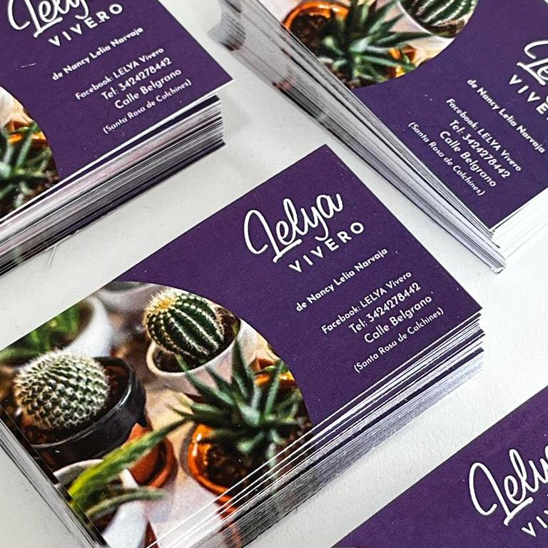

PRINCIPALES PRODUCTOS

Tarjetas personales
Sin dudas, uno de los productos más buscados son las tarjetas de presentación, que pueden ser utilizas para promocionar tu negocio o para dar información de contacto para tu profesión.
Ver más
Calcos
Sin dudas, uno de los productos más buscados son las tarjetas de presentación, que pueden ser utilizas para promocionar tu negocio o para dar información de contacto para tu profesión.
Ver más
Fotografías
Nuestro revelado de fotografías te ofrece una de las calidades más sobresalientes del mercado tanto en el material base como en sus colores.
Ver más